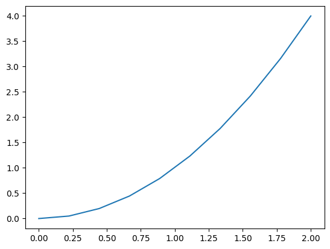
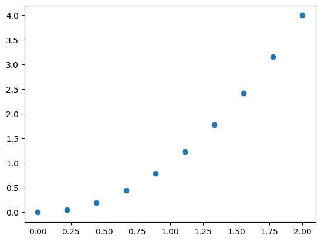
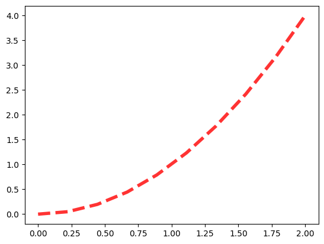
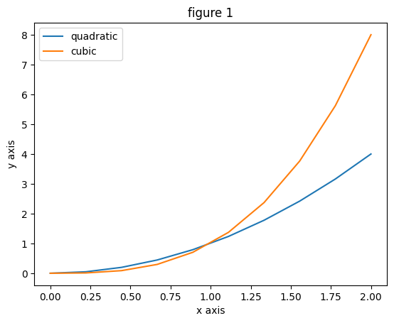
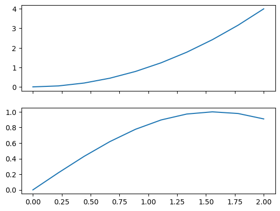
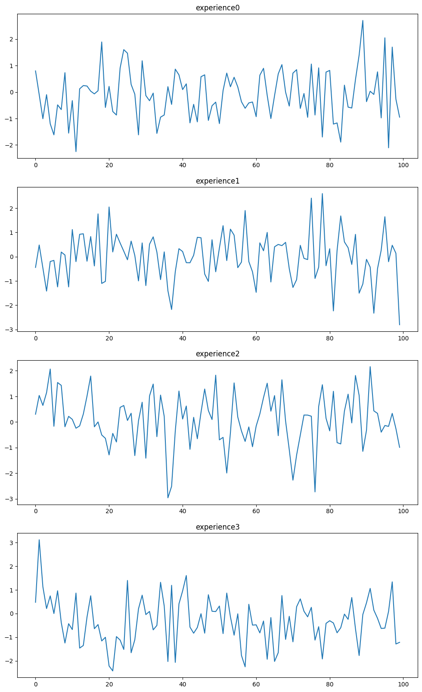

14: Matplotlib - Graphiques de Base#
1. Pyplot#
import numpy as np
import matplotlib.pyplot as plt
Simple graphs#
X = np.linspace(0, 2, 10)
y = X**2
plt.plot(X, y)
plt.show()

plt.scatter(X, y)
plt.show()

Chart Styles#
There are many styles to add to charts. Here are the most important ones to remember:
c** : line color
lw** : line thickness (for plot charts)
ls** : style of the line (for plot charts)
size** : size of the point (for scatter charts)
marker** : style of points (for scatter charts)
alpha** : transparency of the graph
plt.plot(X, y, c='red', lw=4, ls='--', alpha=0.8)
plt.show()

2. Life cycle of a figure#
In order to create figures of our own, we must follow the following life cycle:
plt.figure(figsize())
plt.plot() (figsize())
Extras (title, axes, legends)
plt.show()
X = np.linspace(0, 2, 10)
plt.figure() # Create a figure
plt.plot(X, X**2, label='quadratic') # first curve
plt.plot(X, X**3, label='cubic') # second curve
# Extra information
plt.title('figure 1') # title
plt.xlabel('x axis') # axes
plt.ylabel('y axis') # axes
plt.legend() # legend
plt.savefig('figure.png') # save the figure in the working directory
plt.show() # show the figure

3. Subplots#
Subplots are another element to add to create multiple graphics on a single figure
plt.subplot(2, 1, 1)
plt.plot(X, y, c='red')
plt.subplot(2, 1, 2)
plt.plot(X, y, c='blue')
[<matplotlib.lines.Line2D at 0x7fe42e51cd30>]
4. Object oriented method#
fig, ax = plt.subplots(2, 1, sharex=True) # share the same axis for the subplots
ax[0].plot(X, y)
ax[1].plot(X, np.sin(X))
plt.show()

5. Exercise and Solution#
Create a “graph” function that allows to plot on a single figure a series of graphs from a dictionary containing several datasets:
def graph(dataset):
# Your code here...
return
# Here is the dataset used
dataset = {f"experience{i}": np.random.randn(100) for i in range(4)}
dataset
{'experience0': array([ 0.79894253, -0.09678464, -1.00828171, -0.09981183, -1.20049261,
-1.61833941, -0.4848008 , -0.66303054, 0.73208213, -1.55299719,
-0.32447185, -2.25210759, 0.12128767, 0.2448561 , 0.22773213,
0.03377253, -0.06924142, 0.04950741, 1.89320438, -0.58252215,
0.21322947, -0.73487917, -0.86879825, 0.9047482 , 1.60334128,
1.46872292, 0.28789884, -0.08123255, -1.61849944, 1.18205821,
-0.13320731, -0.32786805, -0.03954353, -1.56354588, -0.94923732,
-0.86716475, 0.20282755, -0.46696435, 0.86635735, 0.64940769,
0.09315449, 0.30969999, -1.16565001, -0.46388321, -1.12749039,
0.57996847, 0.65083582, -1.07244398, -0.51708263, -0.38184998,
-1.19238003, 0.05681602, 0.71720813, 0.19983477, 0.55870806,
0.19383101, -0.36648661, -0.61362684, -0.41140066, -0.37655171,
-0.93044454, 0.63676899, 0.8972367 , -0.12665517, -1.00135998,
-0.13428071, 0.68611077, 1.03643231, -0.00318709, -0.53011782,
0.71602482, 0.84565395, -0.61844608, -0.0545249 , -0.95587143,
1.05844107, -0.86786071, 0.91492035, -1.70049743, 0.7547047 ,
0.81741372, -1.21103021, -1.16849063, -1.89266863, 0.26056673,
-0.5694431 , -0.60441763, 0.46812107, 1.39918175, 2.70643746,
-0.36346821, 0.02909035, -0.09056035, 0.76388657, -0.97771704,
2.05032667, -2.10831801, 1.69936947, -0.27082296, -0.9485822 ]),
'experience1': array([-0.44376559, 0.47934503, -0.46603095, -1.41787958, -0.1995866 ,
-0.15423276, -1.24622298, 0.18881659, 0.06800993, -1.2461236 ,
1.11613259, -0.20480564, 0.92077873, 0.94235688, -0.18733566,
0.82774716, -0.38277373, 1.76231371, -1.10319895, -1.01857595,
2.04575415, 0.19458181, 0.92342987, 0.56453297, 0.22489322,
-0.12764602, 0.64091171, 0.04717205, -0.99897069, 0.56576155,
-1.1914229 , 0.51305132, 0.81521775, 0.19066018, -0.94512379,
0.19683374, -1.40197731, -2.17575857, -0.62431691, 0.32793213,
0.21099686, -0.24716961, -0.25162465, 0.05835173, 0.7970001 ,
0.7789379 , -0.71547873, -1.01940484, 0.69644054, -0.62198549,
0.35462573, 1.27595872, -0.16130863, 1.13221932, 0.88628829,
-0.45313133, -0.22330197, 1.90016748, -0.20055764, -0.62420067,
-1.46939816, 0.56889642, 0.24225675, 0.99807937, -1.04362132,
0.4069876 , 0.50293095, 0.4546435 , 0.58814858, -0.49689885,
-1.26811877, -0.94713479, 0.46679772, -0.07084832, -0.11954155,
2.41056944, -0.8977976 , -0.43222223, 2.59891441, -0.37290506,
0.32622465, -2.23452442, 0.2526282 , 1.67786573, 0.60690823,
0.36853711, -0.32079273, 0.91843365, -1.50460893, -1.12809194,
-0.11090885, -0.43017184, -2.32874682, -0.49453663, 0.26749282,
1.64392077, -0.20771756, 0.46979037, 0.13869901, -2.80360206]),
'experience2': array([ 0.30433843, 1.03716906, 0.6483563 , 1.14693294, 2.06741996,
-0.16496422, 1.54149433, 1.42992348, -0.18414336, 0.22190714,
0.1046422 , -0.24064285, -0.15033131, 0.31210893, 1.01077955,
1.79400654, -0.18587882, 0.00300905, -0.50426012, -0.63574072,
-1.28296212, -0.44266099, -0.7782832 , 0.57098543, 0.64516959,
0.06145361, 0.34281138, -1.30867932, 0.05066888, 0.77207857,
-1.40976778, 1.01905336, 1.48152176, -0.5702688 , 1.05126514,
0.21590183, -2.95650715, -2.51036739, -0.35776776, 1.2096905 ,
0.11795837, 0.62513916, -1.06395101, 0.1837986 , -0.65064154,
0.37645537, 1.28783635, 0.44902852, 0.09749852, 1.82750929,
-0.69559865, -0.59847321, -1.98867851, -0.4156356 , 1.52666858,
0.19368777, -0.34878212, -0.75664099, -0.19114333, -0.96330698,
-0.1573583 , 0.31668584, 0.95418044, 1.51503343, 0.42350862,
1.03101613, -0.53186506, 1.64832673, 0.03698077, -1.08074085,
-2.26709968, -1.28674999, -0.50712626, 0.27269271, 0.27045396,
0.22712884, -2.72541172, 0.60626034, 1.45510599, 0.14637071,
-0.34587015, 1.19909151, -0.80372209, -0.85361154, 0.42751779,
1.08792607, -0.03418515, 1.81564376, 1.03760746, -1.14358617,
-0.32137393, 2.16008073, 0.43584734, 0.33676241, -0.39491588,
-0.13539252, -0.16954625, 0.33812539, -0.25531475, -0.98730564]),
'experience3': array([ 4.76318626e-01, 3.11540261e+00, 1.13171757e+00, 2.11780333e-01,
7.45576013e-01, 9.74003923e-04, 9.61857111e-01, -3.79254789e-01,
-1.24363946e+00, -4.28110930e-01, -6.75501634e-01, 8.64077653e-01,
-1.45799956e+00, -1.34849784e+00, -1.49273179e-01, 7.50889385e-01,
-6.38500994e-01, -4.65299236e-01, -1.15658958e+00, -1.00211311e+00,
-2.21407455e+00, -2.42208723e+00, -9.73321407e-01, -1.11832056e+00,
-1.51493685e+00, 1.39703754e+00, -1.65312452e+00, -1.10468054e+00,
2.00538036e-01, 7.76064192e-01, -4.31776082e-02, 8.97394104e-02,
-6.87468874e-01, -5.02160533e-01, 1.31946932e+00, 3.15122063e-01,
-2.02522088e+00, 1.19264712e+00, -2.06133330e+00, 4.07180328e-01,
9.55814182e-01, 1.60499427e+00, -5.71837841e-01, -8.29452578e-01,
-5.88495873e-01, -6.11796000e-03, -8.27827507e-01, 7.94412220e-01,
9.68049263e-02, 8.41710285e-02, 3.17276747e-01, -8.45982872e-01,
8.64776078e-01, -1.37042403e-01, -9.13098772e-01, -1.10192283e-02,
-1.76730914e+00, -2.24843987e+00, 3.91437195e-01, -4.87230879e-01,
-4.76737712e-01, -8.15865803e-01, -3.14705967e-01, -1.92905009e+00,
-1.69093004e-01, -2.02097184e+00, -1.65058410e+00, 7.60354781e-01,
-1.09050196e+00, -1.16809535e-01, -1.19361523e+00, 2.87608653e-01,
6.19109765e-01, 9.75999165e-02, -1.38251682e-01, 2.61625021e-01,
-1.12073576e+00, -5.54541609e-01, -1.91669740e+00, -4.14279853e-01,
-3.03140052e-01, -3.97571587e-01, -8.11604132e-01, -5.98503474e-01,
-2.36911116e-02, -2.43740391e-01, 6.76788960e-01, -6.36440767e-01,
-1.77239977e+00, -4.25008081e-02, 4.54019723e-01, 1.06231175e+00,
1.43752629e-01, -2.00536260e-01, -6.28867893e-01, -6.15033482e-01,
9.03750066e-02, 1.33762601e+00, -1.28472620e+00, -1.21512665e+00])}
Solution#
Show code cell content
def graph(data):
n = len(data)
plt.figure(figsize=(12, 20))
for k, i in zip(data.keys(), range(1, n+1)):
plt.subplot(n, 1, i)
plt.plot(data[k])
plt.title(k)
plt.show()
graph(dataset)
